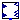

Type 3 wind generator model
Extends from Modelica.Icons.Package (Icon for standard packages).
| Name | Description |
|---|---|
|  Generator | Implementation of type 3 wind generator |
Implementation of type 3 wind generator
| Name | Description |
|---|---|
| freq | [Hz] |
| omega_0 | |
| Kpllp | |
| ge_x0_0 | [1] |
| ge_x1_0 | [1] |
| ge_x2_0 | [1] |
| GEN_base | [VA] |
| SYS_base | [VA] |
| Lpp | [1] |
| Name | Description |
|---|---|
| Efd | Excitation voltage |
| Ipcmd | Current command |
| Vt | Terminal voltage |
| Pgen | Active power |
| Qgen | Reactive power |
| p |